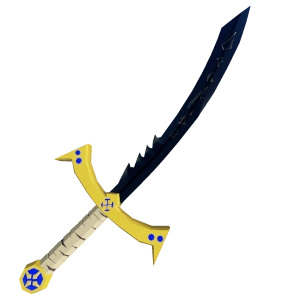
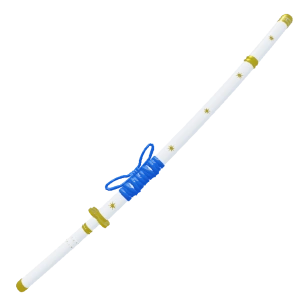
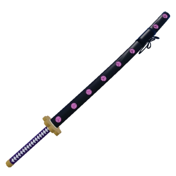
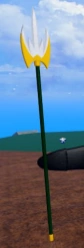
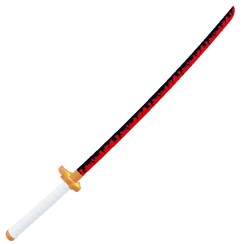
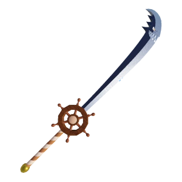
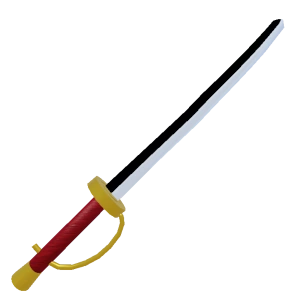
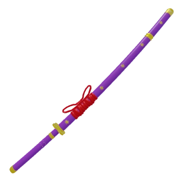
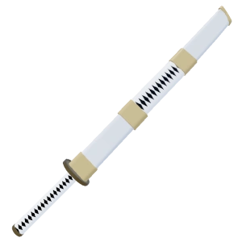

As melhores espadas
Dark Blade
é uma das quatro Espadas Míticas , adicionadas na Atualização 1 . A primeira espada que permite ao usuário "manter pressionada" a tecla de movimento por uma fração de segundo para alterar a mecânica/alcance dos movimentos. (~0,15s para movimento Z, ~0,3s para movimento X)  Dark Blade requer um certo estilo de jogo, onde o usuário se aproveita dos erros do oponente. Isso pode ocorrer quando o oponente usa um movimento que irá atordoá-lo, e o usuário reage e acerta rapidamente.
Tushita
 Tushita é uma Espada Lendária , adicionada na Atualização 15 . Possui ataques rápidos com alto dano, tornando-a uma espada de primeira linha em PvP e em Raids.
Shisui
é uma Espada Lendária que pode ser comprada no Revendedor de Espadas Lendárias , que aparece por 15 minutos em locais aleatórios ao redor do Segundo Mar a cada 4-5 horas. Custa 2.000.000. 
Spikey Trident
O Spikey Trident é uma espada lendária . Foi adicionado na Atualização 17 (Parte 2) . É conhecido por seu grande potencial de combo e bom dano geral. 
rengoku
BuddySword

Saber

Hallow Scythe
.jpg)
Yama

Wando

instagran:guil1_7